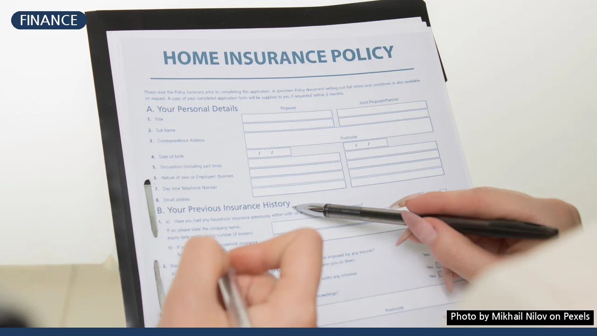
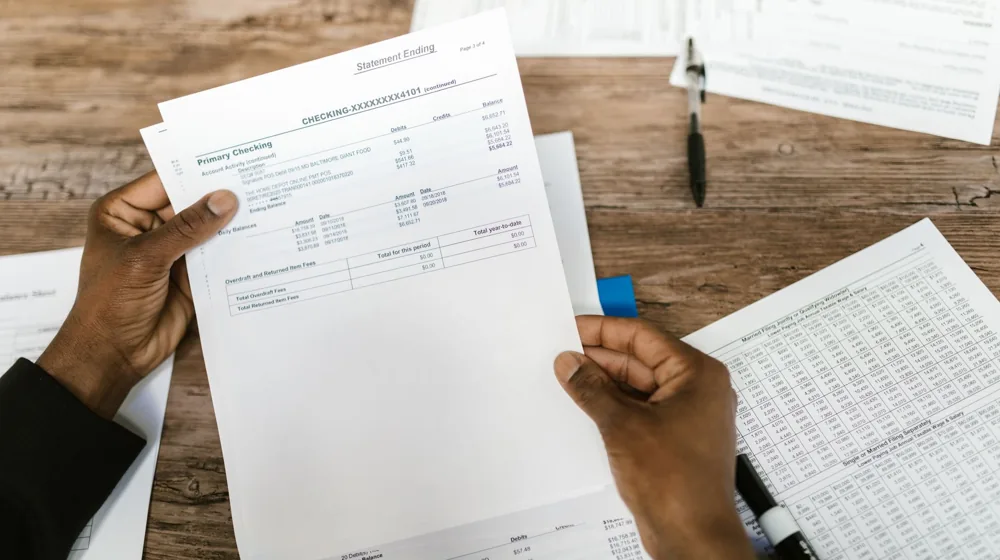

보험 리모델링, 손해 없이 현명하게? 5가지 체크리스트로 성공 전략 세우기
사진: Mikhail Nilov / Pexels (무료 이미지, 출처 표기)
보험 리모델링, 왜 필요할까요?

시간이 흐르면서 우리의 삶은 끊임없이 변합니다. 결혼, 출산, 주택 구매, 직업 변경, 은퇴 등 중요한 삶의 이벤트는 물론, 의료 기술의 발전이나 물가 상승 같은 사회적 변화 또한 보험의 필요성을 재정의하게 만들죠. 처음 가입했던 보험이 현재 나의 상황에 딱 맞는 옷처럼 편안하게 느껴지시나요? 만약 보험료가 부담되거나, 보장이 부족하다고 느껴진다면 보험 리모델링을 고민해볼 때입니다.
보험 리모델링은 기존 보험을 해지하거나 변경하고, 새로운 보험에 가입하는 과정을 통해 현재와 미래의 필요에 맞춰 보험을 재설계하는 것을 의미합니다. 불필요한 지출은 줄이고 필요한 보장은 강화하여 '내게 맞는 최적의 보험'을 만드는 것이 최종 목표입니다.
성공적인 보험 리모델링을 위한 5가지 핵심 체크포인트
섣부른 판단은 오히려 손실을 가져올 수 있습니다. 보험 리모델링을 신청하기 전에 다음 5가지 핵심 포인트를 꼼꼼히 점검하여 현명한 결정을 내리세요.
- 1. 현재 보험 현황을 정확히 파악하세요: 현재 가입된 모든 보험의 보장 내용, 보험료, 납입 기간, 해지환급금 등을 꼼꼼히 확인합니다. 보장 개시일, 면책 기간 등 세부 사항도 중요합니다. 특히 보장 내용이 중복되거나, 나에게 불필요한 특약이 포함되어 있지는 않은지 확인해야 합니다.
- 2. 변화된 삶과 필요 보장을 점검하세요: 결혼, 출산, 자녀의 독립, 은퇴 계획 등 개인의 삶의 단계 변화에 따라 필요한 보장이 달라집니다. 사망 보장이 필요한 시점인지, 질병이나 상해 보장이 더 중요한지, 노후 실손이나 연금 보험이 필요한지 등을 구체적으로 따져보세요.
- 3. 현재 재정 상황과 보험료 지불 능력을 고려하세요: 소득과 고정 지출을 고려하여 매월 납입 가능한 적정 보험료를 산정해야 합니다. 무리한 보험료는 보험 유지에 부담을 줄 수 있으므로, 현재 재정 상태에 맞는 수준으로 조정하는 것이 중요합니다니다.
- 4. 중복 보장과 부족한 부분을 명확히 확인하세요: 실손의료비 보험처럼 중복 가입 시 보장 효과가 없는 보험이 있을 수 있습니다. 반대로 암, 뇌졸중, 심근경색 등 3대 질병 보장이나 수술비, 입원비 등 꼭 필요한 보장이 부족하지는 않은지 확인하여 보완이 필요한 부분을 찾아야 합니다.
- 5. 기존 보험 해지 시 불이익을 반드시 확인하세요: 기존 보험을 해지하고 새로운 보험에 가입할 경우, 해지환급금이 납입 원금보다 적을 수 있습니다. 또한, 기존 보험의 계약 체결 시점 대비 연령 증가로 인한 보험료 인상이나, 건강 악화로 인해 새로운 보험 가입이 어려워질 수도 있으니 신중하게 검토해야 합니다.
보험 리모델링, 이런 상황이라면 꼭 고려해보세요
어떤 경우에 보험 리모델링을 적극적으로 고려해야 할까요? 다음은 보험 리모델링의 필요성이 커지는 대표적인 상황들입니다.
주의하세요! 보험 리모델링 시 흔히 하는 실수
보험 리모델링은 신중하게 접근해야 합니다. 다음은 많은 사람들이 흔히 저지르는 실수들입니다. 이런 함정을 피하는 것이 중요합니다.
- 섣부른 기존 보험 해지: 새로운 보험에 가입하기 전에 기존 보험을 먼저 해지하면, 보험 공백 기간이 발생하여 사고 발생 시 보장을 받지 못할 수 있습니다. 반드시 새로운 보험 가입 완료 후 기존 보험을 해지하는 것이 안전합니다.
- 오직 보험료 절감에만 집중: 보험료를 줄이는 것도 중요하지만, 보장 내용을 충분히 고려하지 않고 무조건 저렴한 보험만 찾는다면 나중에 큰 후회를 할 수 있습니다. 합리적인 보장과 보험료의 균형을 찾는 것이 중요합니다.
- 건강 상태 변화 간과: 과거 보험 가입 시점과 달리 현재 건강 상태가 나빠졌다면, 새로운 보험 가입 시 보험료가 인상되거나 가입이 거절될 수 있습니다. 이 점을 미리 고려해야 합니다.
- 불필요한 특약 무분별한 추가: 설계사의 권유에 따라 자신에게 필요 없는 특약을 많이 추가하면 보험료만 높아지고 실질적인 이득은 적을 수 있습니다. 각 특약의 필요성을 면밀히 검토해야 합니다.
보험 리모델링, 단계별로 따라하기
현명한 보험 리모델링은 체계적인 단계를 거쳐야 합니다. 다음 5단계 과정을 통해 나에게 맞는 최적의 보험을 설계해보세요.
1단계: 현재 보험 계약 분석
가장 먼저 할 일은 현재 가입된 모든 보험의 상세 내용을 파악하는 것입니다. 각 보험의 보장 내용, 만기, 납입 기간, 특약 사항, 해지환급금 등을 객관적으로 정리합니다. 금융감독원 '내 보험 찾아줌' 서비스를 이용하면 본인 명의의 숨은 보험금을 포함하여 모든 보험 가입 내역을 쉽게 확인할 수 있습니다. (2026년 11월 기준)
2단계: 나의 보장 니즈(Needs) 명확화
현재 나의 연령, 직업, 가족 구성, 재정 상태, 건강 상태, 미래 계획 등을 고려하여 어떤 종류의 보장이 가장 필요한지 구체적으로 정의합니다. 예를 들어, 자녀가 어린 30대 부부라면 종신보험의 사망 보장과 암 등 중대 질병 진단비가 중요할 수 있고, 은퇴를 앞둔 50대라면 노후 의료비와 연금 보장이 더 중요할 수 있습니다.
3단계: 최적의 보험 상품 비교 및 선택
1단계와 2단계에서 파악한 정보를 바탕으로 시장에 나와 있는 다양한 보험 상품들을 비교 분석합니다. 여러 보험사의 유사한 상품들을 비교사이트나 보험 전문가의 도움을 받아 보장 범위, 보험료, 보험금 지급 조건 등을 꼼꼼히 비교합니다. 상품 비교 시에는 해약환급금 예시표도 함께 확인하는 것이 좋습니다.
4단계: 전문가와 상담을 통한 최종 검토
혼자 결정하기 어렵다면 신뢰할 수 있는 보험 설계사나 독립적인 재무 설계 전문가와 상담하세요. 그들은 객관적인 시각으로 현재의 보험 상황을 진단하고, 나의 니즈에 맞는 최적의 리모델링 방안을 제시해줄 수 있습니다. 이때, 특정 회사 상품만 추천하는 설계사보다는 여러 회사의 상품을 비교해줄 수 있는 전문가를 선택하는 것이 좋습니다.
5단계: 새로운 보험 가입 및 기존 보험 정리
최종 결정된 새로운 보험에 가입합니다. 이때, 반드시 기존 보험 해지 전 새로운 보험의 가입이 완료되었는지 확인해야 합니다. 신규 보험의 보장 개시일과 면책 기간 등을 고려하여 보험 공백 없이 안전하게 기존 보험을 정리하는 것이 중요합니다. 또한, 해지할 보험의 해지환급금을 정확히 확인하여 예상치 못한 손실을 최소화합니다.
보험 리모델링은 한 번 결정하면 되돌리기 어려운 중요한 재정 결정입니다. 충분한 시간을 가지고 신중하게 접근하시길 권장합니다. 정확한 사항은 각 보험사의 공식 홈페이지나 보험 전문가를 통해 다시 한번 확인하시길 바랍니다.
🔗 이 글도 함께 보면 좋아요: 암보험, 이것 놓치면 억대 손해? 가입 전 필수 체크리스트